COMMUNITY · OUTREACH
Outreach contribution since September 2021
Robotics STEM Outreach.
Outreach Lead (Summer 2025) · outreach contributor since 2021 · FRC Team 2220 Blue Twilight
I bring FRC and FLL robots into community events so people can see, ask about, and get curious about student-built robotics.
What the work
looked like.
I joined Team 2220 in 2021 and began helping with outreach alongside my mechanical work. In Summer 2025, I served as Robotics Outreach Lead and helped organize and run public demonstrations. My role was to make a competition robot easier to approach: explain what visitors were seeing, answer questions without assuming they knew robotics, and help them try the activities.
My Outreach Lead term was during Summer 2025, between the REEFSCAPE and REBUILT seasons. After that summer, I continued as Design Lead.
At each demonstration, I adjusted the explanation to the person in front of me. Some visitors wanted to know how the robot moved; others wanted to try driving or ask what students did to build it.
Across more than 65 hours and 10+ community events, I brought FRC and FLL robots to Eagan Market Fest, STEM Day at the State Fair, Richfield Elementary Coding Camp, library demos, and school events. Visitors could see the robot up close, ask how it worked, and try a hands-on activity.
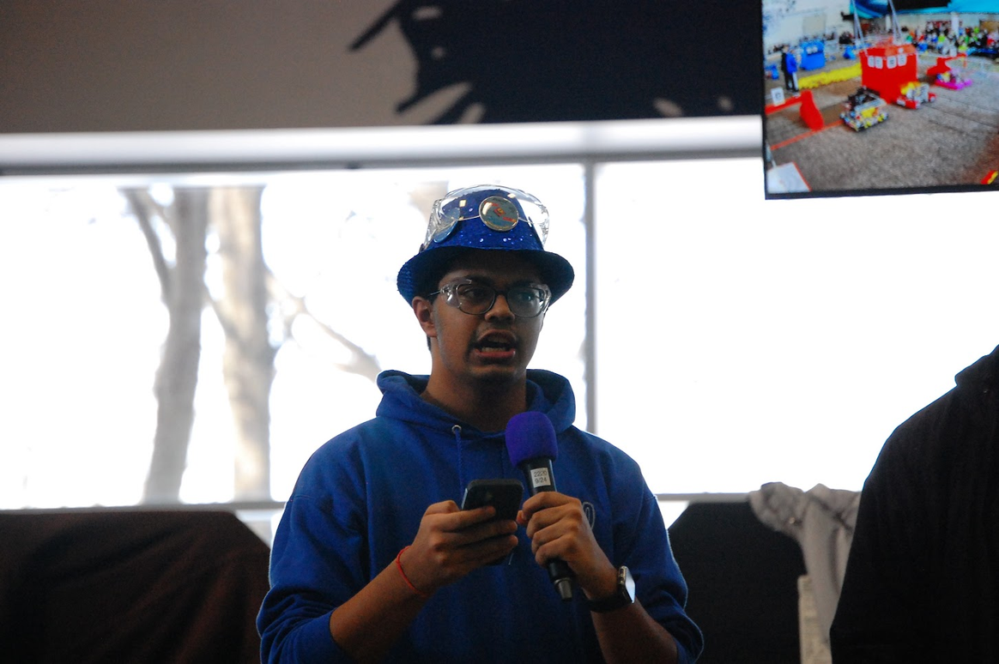
Top skills utilized
- STEM outreach
- Technical communication
- Public demonstrations
- Event engagement
IN THE COMMUNITY
Outreach by
season.
Community demonstrations and STEM events, organized by the FRC season.

BIOCORE
2026–2027 · Kickoff January 9, 2027
MY ROLE Design Lead
BIOCORE
2026–2027 · Kickoff January 9, 2027
MY ROLE Design Lead
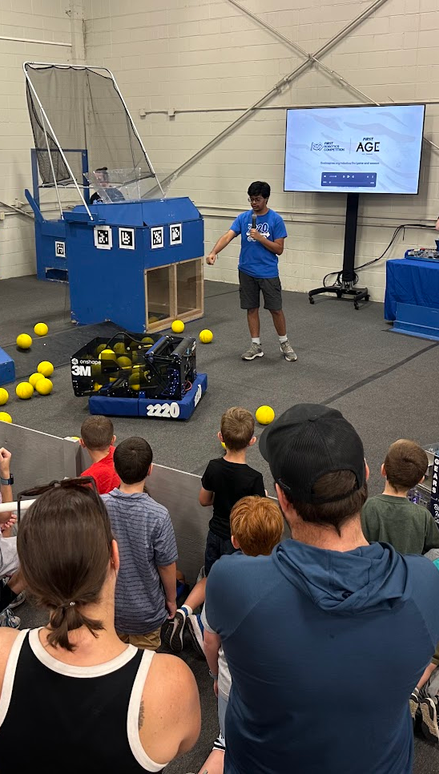
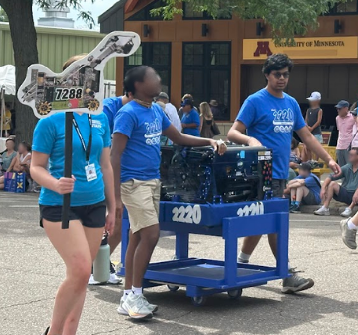
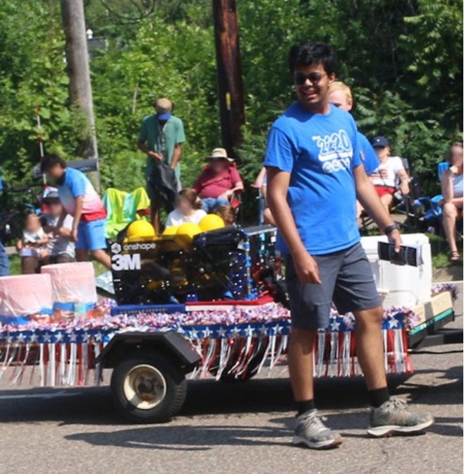

REBUILT
2025–2026 · January 10, 2026 – May 2, 2026
MY ROLE Design Lead
REBUILT
2025–2026 · January 10, 2026 – May 2, 2026
MY ROLE Design Lead
SUMMER 2025 · BETWEEN REEFSCAPE AND REBUILTOutreach Lead
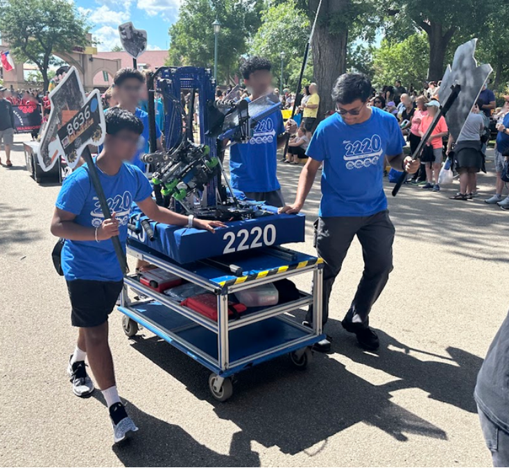
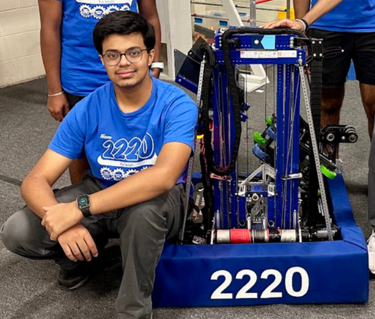
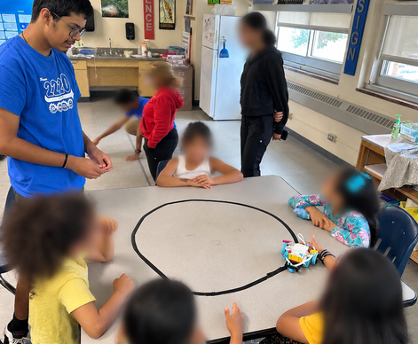

REEFSCAPE
2024–2025 · January 4, 2025 – April 19, 2025
MY ROLE Design Lead
REEFSCAPE
2024–2025 · January 4, 2025 – April 19, 2025
MY ROLE Design Lead
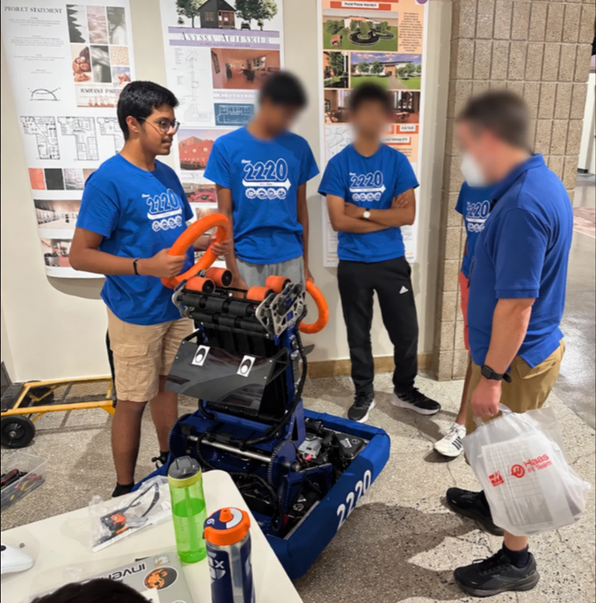
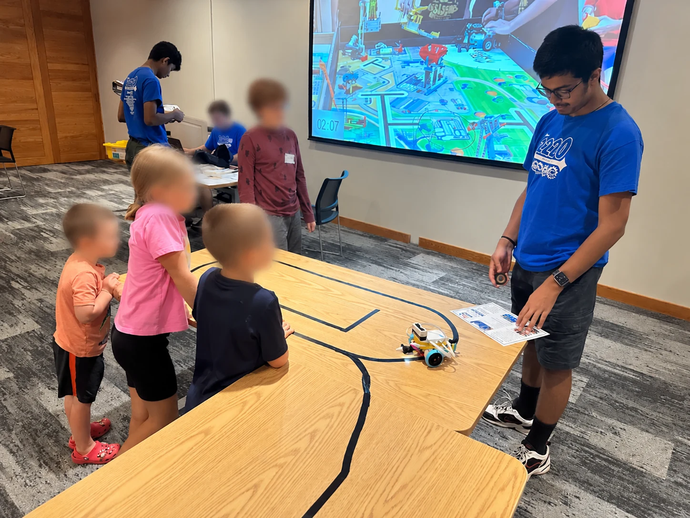
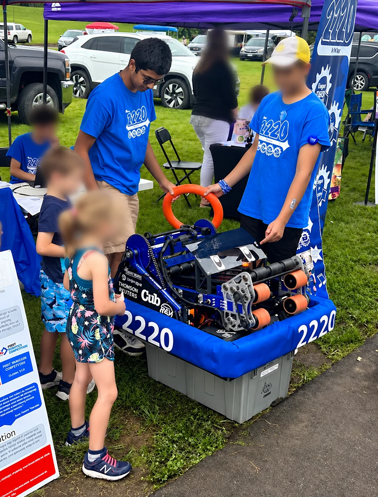
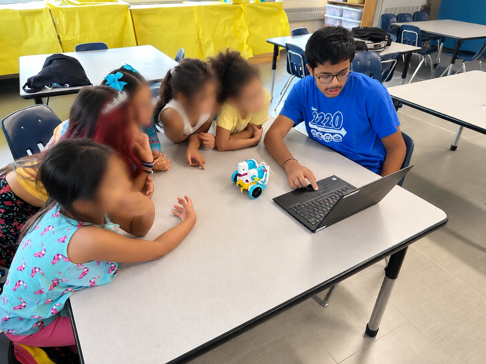
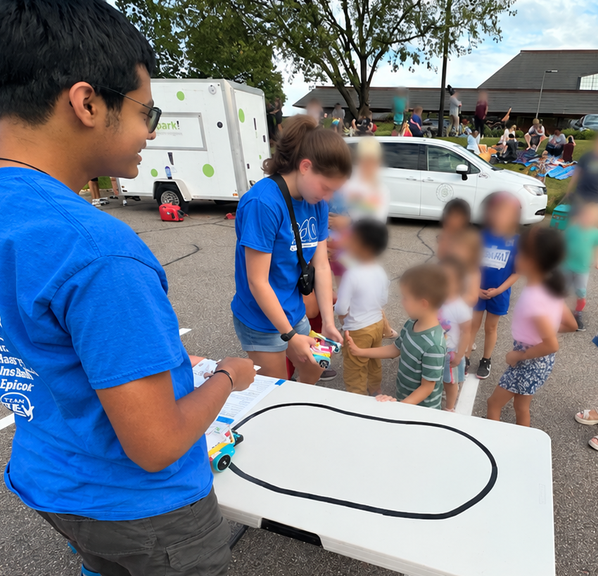
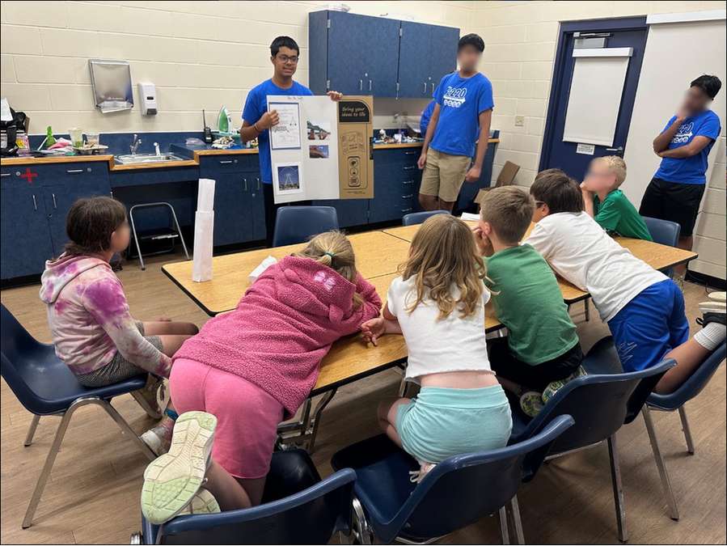

CRESCENDO
2023–2024 · January 6, 2024 – April 20, 2024
MY ROLE Mechanical work · outreach contributor
CRESCENDO
2023–2024 · January 6, 2024 – April 20, 2024
MY ROLE Mechanical work · outreach contributor
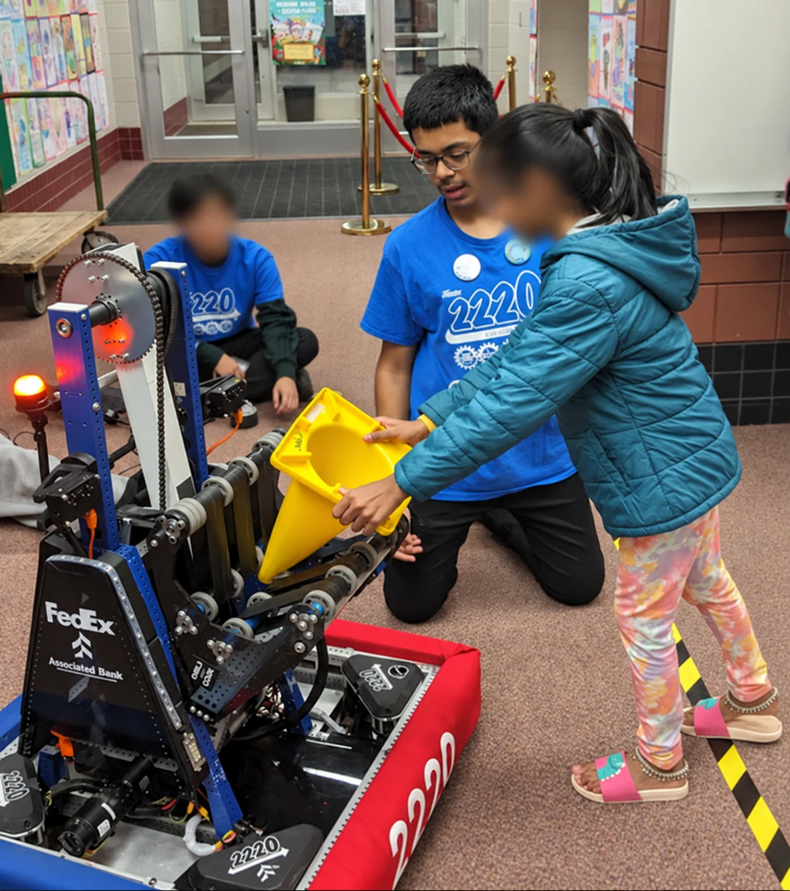

CHARGED UP
2022–2023 · January 7, 2023 – April 22, 2023
MY ROLE Mechanical work · outreach contributor
CHARGED UP
2022–2023 · January 7, 2023 – April 22, 2023
MY ROLE Mechanical work · outreach contributor
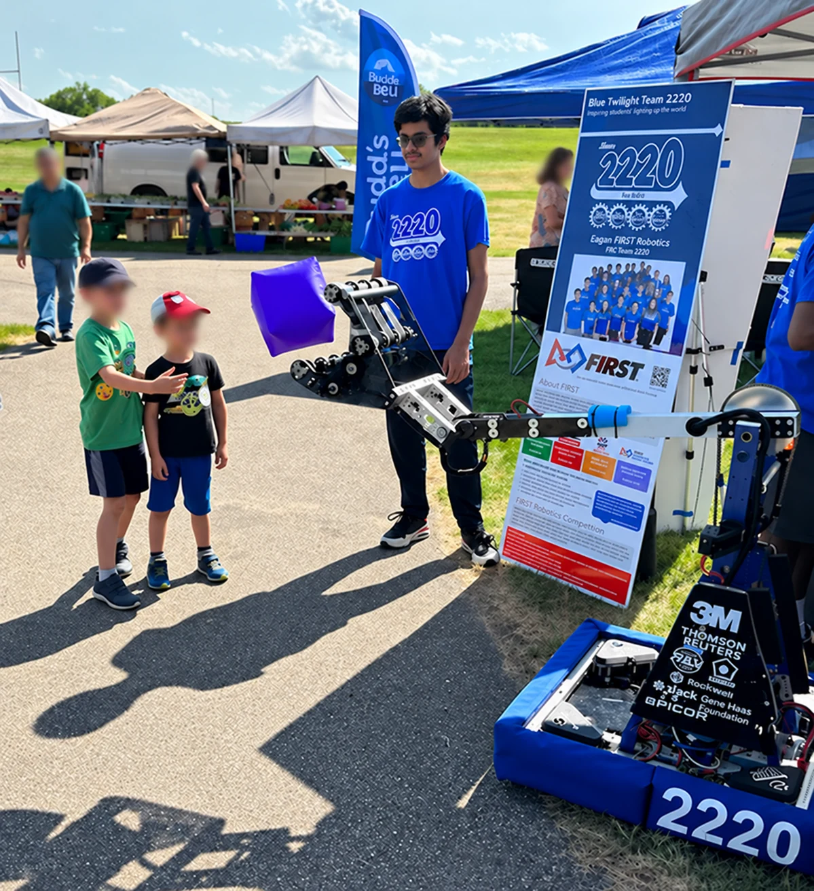